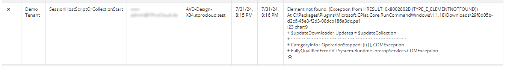
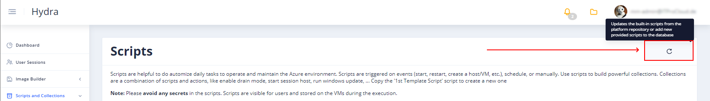
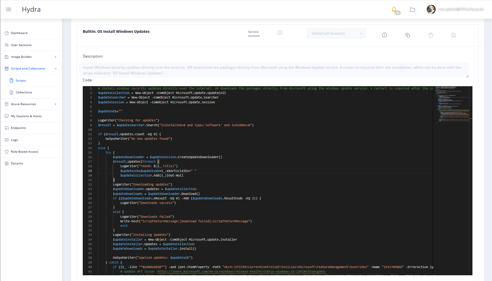
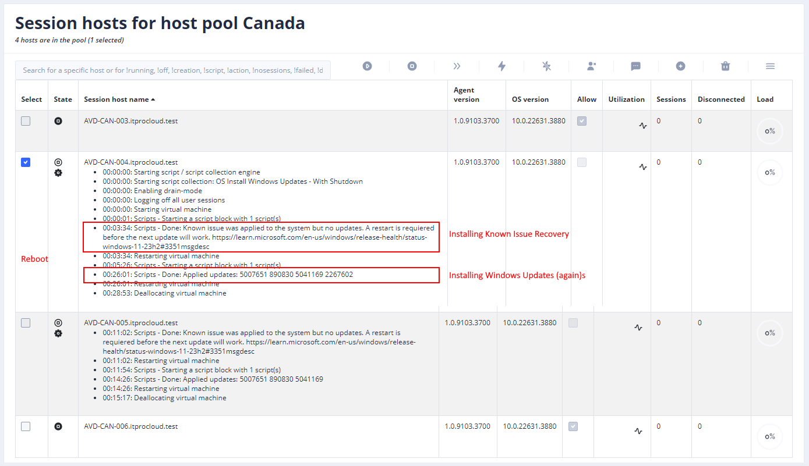

Windows gives you access to work with Windows Update on an API level. This is often used to find, download, and install new updates programmatically. That makes special sense in Azure Virtual Desktop, which allows us to trigger Windows Updates in a maintenance Windows where autoscale is disabled (I don’t want to imagine what happens if Windows shuts down during Windows Updates).
Also, my solution, Hydra for Azure Virtual Desktop, uses the API to install Windows updates. That also includes draining, starting, installing, rebooting, etc. - all that is needed to update an existing host or a golden master. E.g.: Example of the script collection for an update:
Unfortunately, a Microsoft patch broke the functionality of the Windows Update API. That is documented here: https://learn.microsoft.com/en-us/windows/release-health/status-windows-11-23h2#3351msgdesc
If you have a broken computer, you will see the following error message: Exception from HRESULT: 0x8002802B (TYPE_E_ELEMENTNOTFOUND) 
The documentation also explains how to resolve the issue using a KIR (known issue recovery), which requires some handwork or automation. To make this as easy as possible for users of Hydra for Azure Virtual Desktop, I added the installation of the KIR as part of the “BuiltIn: OS Install Windows Updates”. Finally, it downloads and installs the KIR package and activates it. A final reboot is needed to bring it to work. If you are using the script as part of the script collection (see image above), it will first patch the host and install updates on the second try of running the “BuiltIn: OS Install Windows Updates”.
To get the updated built-in scripts, you can click on the icon in the upper-right corner inside of the scripts page: 
Finally, you should have the updated script (reload the site first): 
After that, the Windows update procedure is working as expected: 
Do you want to adapt your scripts? Here is my implementation. Feel free to use it:
# Install Windows security updates directly over the internet. VM downloads the packages directly from Microsoft using the Windows Update service. A restart is required after the installation, which can be done with the script collection "OS Install Windows Updates".
$updateCollection = New-Object -ComObject Microsoft.Update.UpdateColl
$updateSearcher = New-Object -ComObject Microsoft.Update.Searcher
$updateSession = New-Object -ComObject Microsoft.Update.Session
$updatesKb=""
LogWriter("Checking for updates")
$result = $updateSearcher.Search("IsInstalled=0 and Type='Software' and IsHidden=0")
if ($result.Updates.Count -EQ 0) {
OutputWriter("No new updates found")
}
else {
try {
$updateDownloader = $updateSession.CreateUpdateDownloader()
$result.Updates|foreach {
LogWriter("Found: $($_.Title)")
$updatesKb=$updatesKb+$_.KBArticleIDs+" "
$updateCollection.Add($_)|Out-Null
}
LogWriter("Downloading updates")
$updateDownloader.Updates = $updateCollection
$updateDownloads = $updateDownloader.Download()
if (($updateDownloads.HResult -EQ 0) -AND ($updateDownloads.ResultCode -EQ 2)) {
LogWriter("Downloads success")
}
else {
LogWriter("Downloads failed")
Write-host("ScriptReturnMessage:{Download failed}:ScriptReturnMessage")
exit
}
LogWriter("Installing updates")
$updateInstaller = New-Object -ComObject Microsoft.Update.Installer
$updateInstaller.Updates = $updateCollection
$updateDownloads = $updateInstaller.Install()
OutputWriter("Applied updates: $updatesKb")
} catch {
if (($_ -like "*0x8002802B*") -and (Get-ItemProperty -Path "HKLM:\SYSTEM\CurrentControlSet\Policies\Microsoft\FeatureManagement\Overrides" -Name "1931709068" -ErrorAction Ignore)."1931709068" -ne 0) {
# Update API issue: https://learn.microsoft.com/en-us/windows/release-health/status-windows-11-23h2#3351msgdesc
$hotFixKirUrl="https://download.microsoft.com/download/3944f364-6483-49ab-af0d-3e2bd80dedaf/Windows%2011%2022H2%20KB5039302%20240711_20301%20Known%20Issue%20Rollback.msi"
try {
LogWriter ("Try to download KIR file to bring Windows Update API back")
(New-Object System.Net.WebClient).DownloadFile($hotFixKirUrl, "$env:temp\KIRKB5039302.msi")
Start-Process msiexec.exe -Wait -ArgumentList '/I $env:temp\KIRKB5039302.msi /quiet'
if (-not (Test-Path "HKLM:\SYSTEM\CurrentControlSet\Policies\Microsoft\FeatureManagement\Overrides")) {
New-Item -Path "HKLM:\SYSTEM\CurrentControlSet\Policies\Microsoft\FeatureManagement\Overrides" -Force -ErrorAction SilentlyContinue
}
New-ItemProperty -Path "HKLM:\SYSTEM\CurrentControlSet\Policies\Microsoft\FeatureManagement\Overrides" -Name "1931709068" -Value 0 -Force -ErrorAction SilentlyContinue
} catch {
LogWriter ("Your system is possible affected by a known issue regarding the Windows Update API. Installing a rollback was not possible due to an error: $_")
throw $_
}
# A reboot is required
OutputWriter("Known issue recovery was applied to the system, but no updates. A restart is required before the next update will work. https://learn.microsoft.com/en-us/windows/release-health/status-windows-11-23h2#3351msgdesc")
} else {
LogWriter ("The KIR installation is installed. If this is not working, another issue prevents the update process: $_")
throw $_
}
}
}